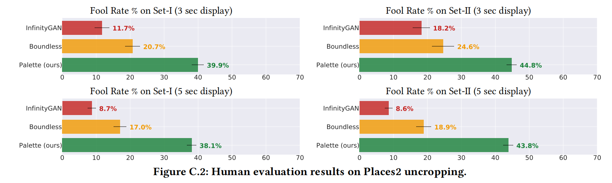

全文翻译
摘要
本文基于条件扩散模型开发了一个统一的图像到图像转换框架，并在四项具有挑战性的图像到图像转换任务上对该框架进行了评估，这些任务分别是彩色化、图像修复、图像扩展和JPEG图像恢复。我们对图像到图像扩散模型的简单实现，在所有任务上均优于强大的生成对抗网络（GAN）和回归基线方法，且无需针对特定任务进行超参数调整、架构定制，也无需使用任何辅助损失函数或复杂的新技术。我们揭示了去噪扩散目标中L2和L1损失对样本多样性的影响，并通过实证研究证明了自注意力机制在神经架构中的重要性。重要的是，我们倡导基于ImageNet建立统一的评估协议，采用人工评估和样本质量评分（如FID、Inception Score、预训练ResNet50的分类准确率，以及与原始图像的感知距离）。我们期望这个标准化的评估协议能够推动图像到图像转换研究的发展。最后，我们展示了一个通用的多任务扩散模型，其性能与特定任务的专业模型相当，甚至更优。有关结果和代码的概述，请查看https://diffusionpalette.github.io/
1 引言
视觉和图像处理领域的许多问题都可以表述为图像到图像的转换。例如，超分辨率、彩色化和图像修复等图像恢复任务，以及实例分割和深度估计等像素级图像理解任务。如图1所示，许多这类任务都是复杂的逆问题，即单个输入可能对应多个符合条件的输出图像。对于图像到图像的转换，一种自然的方法是利用深度生成模型来学习给定输入时输出图像的条件分布，因为深度生成模型能够捕捉图像高维空间中的多模态分布。
| 图1：图像到图像的扩散模型能够在各个任务中生成高保真的输出，而无需针对特定任务进行定制或使用辅助损失 |
生成对抗网络（GANs）[Goodfellow等人，2014；Radford等人，2015]已成为许多图像到图像任务的首选模型[Isola等人，2017a]。GANs能够生成高保真的输出，应用广泛，并且支持高效采样。然而，GANs的训练可能具有挑战性[Arjovsky等人，2017；Gulrajani等人，2017]，并且在输出分布中常常出现模式丢失的情况[Metz等人，2016；Ravuri和Vinyals，2019]。自回归模型[Parmar等人，2018；van den Oord等人，2016]、变分自编码器[Kingma和Welling，2013；Vahdat和Kautz，2020]以及归一化流[Dinh等人，2016；Kingma和Dhariwal，2018]在特定应用中取得了成功，但可以说，它们在质量和通用性方面尚未达到GANs的水平。
扩散模型和基于分数的模型[Ho等人，2020；Sohl-Dickstein等人，2015；Song和Ermon，2020]最近受到了广泛关注[Austin等人，2021；Cai等人，2020；Hoogeboom等人，2021；Kingma等人，2021；Song等人，2021；Vahdat等人，2021]，在连续数据建模方面取得了一些关键进展。在语音合成领域，扩散模型在人工评估中的得分与最先进的自回归模型相当[Chen等人，2021a，2021b；Kong等人，2021]。在基于类别条件的ImageNet生成挑战中，它们在FID分数上优于强大的GAN基线[Dhariwal和Nichol，2021；Ho等人，2021]。在图像超分辨率方面，它们实现了令人瞩目的人脸增强效果，性能优于GANs [Saharia等人，2021]。尽管取得了这些成果，但扩散模型在提供一个通用且灵活的图像操作框架方面是否能与GANs相媲美仍不明确。
本文研究了Palette（我们对图像到图像扩散模型的实现）在一系列不同且具有挑战性的任务中的普遍适用性，这些任务包括彩色化、图像修复、图像扩展和JPEG图像恢复（见图1、图2）。我们发现，Palette在不进行特定任务的架构定制、超参数调整或损失函数修改的情况下，能够在所有四个任务中生成高保真的输出。它优于特定任务的基线方法，以及具有相同神经网络架构的强大回归基线。重要的是，我们展示了一个单一的通用Palette模型，在彩色化、图像修复和JPEG图像恢复任务上进行训练后，其性能优于专门的JPEG模型，并且在其他任务上也能达到具有竞争力的表现。
| 图2：给定中心256×256像素，我们以128像素为步长向左和向右进行外推（2×8次应用50%的Palette图像扩展），以生成最终的256×2304全景图。附录中的图D.3展示了更多示例 |
我们研究了Palette的关键组件，包括去噪损失函数和神经网络架构。我们发现，虽然去噪目标中的L2 [Ho等人，2020]和L1 [Chen等人，2021a]损失在样本质量评分上相似，但L2会使模型样本具有更高的多样性，而L1则会产生更保守的输出。我们还发现，从Palette的U-Net架构中移除自注意力层以构建全卷积模型会损害性能。最后，我们倡导基于ImageNet [Deng等人，2009]为图像修复、图像扩展和JPEG图像恢复建立标准化的评估协议，并报告了几个基线方法的样本质量评分。我们希望这个基准测试能够推动图像到图像转换研究的发展。
2 相关工作
我们的工作受到Pix2Pix [Isola等人，2017a]的启发，该研究利用生成对抗网络（GANs）探索了众多图像到图像的转换任务。基于GAN的技术也被应用于诸如非配对图像转换[Zhu等人，2017a]、无监督跨域生成[Taigman等人，2016]、多域转换[Choi等人，2018]以及少样本转换[Liu等人，2019]等图像到图像的问题。然而，现有的GAN模型在整体转换具有一致结构和纹理规律的图像时，有时并不成功。
扩散模型[Sohl - Dickstein等人，2015]最近在图像生成[Dhariwal和Nichol，2021；Ho等人，2020，2021]、音频合成[Chen等人，2021a；Kong等人，2020]、图像超分辨率[Kadkhodaie和Simoncelli，2021；Saharia等人，2021]，以及非配对图像到图像转换[Sasaki等人，2021]和图像编辑[Meng等人，2021；Sinha等人，2021]等方面取得了令人瞩目的成果。我们的条件扩散模型基于这些最新进展，在一系列图像到图像转换任务中展现出了通用性。
大多数用于图像修复和其他线性逆问题的扩散模型，都是将无条件模型改编用于条件任务[Meng等人，2021；Sohl - Dickstein等人，2015；Song等人，2021]。这样做的优点是只需训练一个模型。然而，无条件任务通常比条件任务更具挑战性。我们将Palette设定为条件模型，如果希望用一个模型处理多个任务，则选择多任务训练。
早期的图像修复方法[Barnes等人，2009；Bertalmio等人，2000；Hays和Efros，2007；He和Sun，2012]在纹理区域效果良好，但在生成语义一致的结构方面往往存在不足。GANs被广泛应用，但通常需要在结构、上下文、边缘、轮廓和手工设计的特征上设置辅助目标[Iizuka等人，2017；Kim等人，2021a；Liu等人，2020；Nazeri等人，2019；Yi等人，2020；Yu等人，2018b，2019]，并且其输出缺乏多样性[Zhao等人，2021；Zheng等人，2019]。
图像扩展（也称为外部绘制）被认为比图像修复更具挑战性，因为它需要在上下文较少的情况下生成开放式内容。早期的方法依赖于检索[Kopf等人，2012；Shan等人，2014；Wang等人，2014]。如今，基于GAN的方法占据主导地位[Teterwak等人，2019]，但往往是特定领域的[Bowen等人，2021；Cheng等人，2021；Lin等人，2021；Wang等人，2019a；Yang等人，2019a]。我们证明，在大型数据集上训练的条件扩散模型能够可靠地处理跨图像领域的图像修复和图像扩展任务。
彩色化是一个研究较为深入的任务[Ardizzone等人，2019；Guadarrama等人，2017；Kumar等人，2021；Royer等人，2017]，它需要一定程度的场景理解，这使得它成为自监督学习的自然选择[Larsson等人，2016]。彩色化面临的挑战包括多样化的色彩选择[Deshpande等人，2017]、尊重语义类别[Zhang等人，2016]以及生成高保真的色彩[Guadarrama等人，2017]。虽然一些先前的工作使用专门的辅助分类损失，但我们发现通用的图像到图像扩散模型在无需特定任务专门化的情况下也能表现良好。
JPEG图像恢复（也称为JPEG伪影去除）是去除压缩伪影的非线性逆问题。Dong等人[2015]将深度卷积神经网络架构应用于JPEG图像恢复，Galteri等人[2017，2019]成功地将GANs应用于伪影去除，但这些方法通常局限于质量因子高于10的情况。我们展示了Palette在去除低至5的质量因子的压缩伪影方面的有效性。
多任务训练在图像到图像转换中是一个相对未被充分探索的领域。Qian等人[2019]和Yu等人[2018a]同时在多个任务上进行训练，但他们主要关注去模糊、去噪和超分辨率等增强任务，并且使用较小的模块化网络。也有一些工作处理在单个任务上同时对多种退化进行训练，例如多尺度超分辨率[Kim等人，2016]以及针对多个质量因子的JPEG图像恢复[Galteri等人，2019；Liu等人，2018b]。借助Palette，我们朝着为广泛的任务构建多任务图像到图像扩散模型迈出了第一步。
3 Palette
扩散模型[Ho等人，2020；Sohl-Dickstein等人，2015]通过迭代去噪过程，将标准高斯分布的样本转换为经验数据分布的样本。条件扩散模型[Chen等人，2021a；Saharia等人，2021]使去噪过程依赖于输入信号。图像到图像的扩散模型是形式为$p(y|x)$的条件扩散模型，其中$x$和$y$均为图像，例如，$x$是灰度图像，$y$是彩色图像。这些模型已被应用于图像超分辨率[Nichol和Dhariwal，2021；Saharia等人，2021]。我们研究图像到图像扩散模型在广泛任务中的普遍适用性。
关于扩散模型的详细论述，请参阅附录A。在此，我们简要讨论去噪损失函数。给定训练输出图像$y$，我们生成一个带噪版本$\tilde{y}$，并训练神经网络$f_{\theta}$，在给定$x$和噪声水平指示符$\gamma$的情况下对$\tilde{y}$进行去噪，其损失函数为：
[Chen等人，2021a]和[Saharia等人，2021]建议使用$L_{1}$范数，即$p = 1$，而标准公式是基于通常的$L_{2}$范数[Ho等人，2020]。我们在下面进行了仔细的消融实验，并分析了范数选择的影响。我们发现，与$L_{2}$相比，$L_{1}$产生的样本多样性明显更低。虽然$L_{1}$在某些应用中可能有助于减少潜在的幻觉，但在这里我们采用$L_{2}$以更忠实地捕捉输出分布。
架构：Palette采用了U-Net架构[Ho等人，2020]，并根据近期的研究成果[Dhariwal和Nichol，2021；Saharia等人，2021；Song等人，2021]进行了一些修改。该网络架构基于[Dhariwal和Nichol，2021]中256×256的类别条件U-Net模型。我们的架构与他们的主要区别在于：（i）不使用类别条件；（ii）按照[Saharia等人，2021]的方法，通过拼接对源图像进行额外的条件设定。
4 评估协议
评估图像到图像转换模型颇具挑战性。先前在彩色化方面的工作[Guadarrama等人，2017；Kumar等人，2021；Zhang等人，2016]依靠FID分数和人工评估来比较模型。像图像修复[Yu等人，2018b，2019]和图像扩展[Teterwak等人，2019；Wang等人，2019b]这类任务，往往严重依赖定性评估。对于其他任务，如JPEG图像恢复[Dong等人，2015；Galteri等人，2019；Liu等人，2018b]，使用基于参考的像素级相似性分数（如PSNR和SSIM）很常见。值得注意的是，许多任务缺乏标准化的评估数据集，例如，在评估时使用的是针对不同方法特定划分的不同测试集。
鉴于ImageNet数据集[Deng等人，2009]的规模、多样性和公开可用性，我们提出了一个针对图像修复、图像扩展和JPEG图像恢复的统一评估协议。对于图像修复和图像扩展，现有工作依赖Places2数据集[Zhou等人，2017]进行评估。因此，我们也对这些任务在Places2上采用标准评估设置。具体来说，我们提倡使用[Larsson等人，2016]提出的ImageNet ctest10k分割作为ImageNet上所有图像到图像转换任务基准测试的标准子集。我们还引入了Places2验证集的一个类似的类别平衡的10,950张图像子集，称为places10k。除了有控制的人工评估外，我们还提倡使用能够同时捕捉图像质量和多样性的自动化指标。我们避免使用像PSNR和SSIM这样的像素级指标，因为对于需要生成虚拟内容的困难任务来说，它们不是衡量样本质量的可靠指标。就像最近的超分辨率研究中，[Dahl等人，2017；Ledig等人，2017；Menon等人，2020]观察到PSNR和SSIM往往倾向于模糊的回归输出，这与人类感知不同。
| 图3：ImageNet验证集图像的彩色化结果。基线模型：†[瓜达拉马等人，2017年]，‡[库马尔等人，2021年]，以及我们自己的强回归基线模型。图C.3展示了更多示例。 |
我们使用四个用于图像到图像转换样本质量的自动化定量指标：Inception Score（IS）[Salimans等人，2017]；Fréchet Inception Distance（FID）；预训练的ResNet-50分类器的分类准确率（CA）（前1）；以及一个简单的感知距离（PD）度量，即在Inception-v1特征空间中的欧几里得距离（参考[Dosovitskiy和Brox，2016]）。为了便于在我们提议的子集上进行基准测试，我们发布了我们的模型输出以及其他数据，如图像修复掩码（见https://bit.ly/eval-pix2pix）。有关我们评估的更多详细信息，请参阅附录C.5。对于某些任务，我们还通过多个模型输出之间的成对SSIM和LPIPS分数来评估样本多样性。样本多样性是一个具有挑战性的问题，也是许多现有基于GAN的方法的关键限制[Yang等人，2019b；Zhu等人，2017b]。
对图像到图像转换模型的最终评估是人工评估，即人类是否能够区分模型输出和自然图像。为此，我们使用二选一迫选（2AFC）试验来评估模型输出与用于获取测试输入的自然图像的感知质量（参考彩色化图灵测试[Zhang等人，2016]）。我们用误判率来总结结果，误判率是指当被问到“你猜哪张图像是相机拍摄的？”时，选择模型输出而非自然图像的人类评分者的百分比（详细信息见附录C）。
5 实验
我们将Palette应用于一系列具有挑战性的图像到图像任务：
- 彩色化：将输入的灰度图像转换为合理的彩色图像。
- 图像修复：用逼真的内容填充图像中用户指定的掩码区域。
- 图像扩展：沿一个或多个方向扩展输入图像以放大图像。
- JPEG图像恢复：纠正JPEG压缩伪影，恢复合理的图像细节。
我们在进行这些任务时，没有进行特定任务的超参数调整、架构定制，也没有使用任何辅助损失函数。所有任务的输入和输出均表示为256×256的RGB图像。每个任务都有其独特的挑战。彩色化需要对物体进行表示、分割和布局，涉及图像的长距离依赖关系。图像修复在处理大掩码、图像多样性和杂乱场景时具有挑战性。图像扩展被普遍认为比图像修复更具挑战性，因为用于约束语义有意义生成的周围上下文更少。虽然其他任务本质上是线性的，但JPEG图像恢复是一个非线性逆问题，它需要一个良好的自然图像统计局部模型来检测和纠正压缩伪影。尽管先前的工作对这些问题进行了广泛研究，但很少有模型能在没有特定任务工程设计的情况下，在所有任务中都取得优异性能，超越特定任务的强大GAN和回归基线模型。除非另有说明，Palette在去噪目标中使用$L_2$损失。（实现细节见附录B）。
5.1 彩色化
虽然先前的工作[Kumar等人，2021；Zhang等人，2016]在彩色化任务中采用LAB或YCbCr颜色空间来表示输出图像，但我们使用RGB颜色空间以保持跨任务的通用性。初步实验表明，Palette在YCbCr和RGB空间中同样有效。我们将Palette与Pix2Pix[Isola等人，2017b]、PixColor[Guadarrama等人，2017]和ColTran[Kumar等人，2021]进行比较。定性结果见图3，定量分数见表1。Palette建立了新的最先进水平，大幅超越现有方法。此外，性能指标（FID、IS和CA）表明，Palette的输出与用于创建测试灰度输入的原始图像几乎无法区分。令人惊讶的是，我们的$L_2$回归基线模型也超越了先前的特定任务技术，这凸显了现代架构和大规模训练的重要性，即使对于基本的回归模型也是如此。在人工评估中，Palette将ColTran的人类评分者误判率提高了10%以上，接近理想的50%误判率。
5.2 图像修复
我们遵循[Yu等人，2019]的方法，在自由形式生成的掩码上训练图像修复模型，并增加简单的矩形掩码。与先前的工作不同，为了保持Palette在不同任务中的通用性，我们没有将二进制图像修复掩码输入模型。相反，我们用标准高斯噪声填充掩码区域，这与去噪扩散模型兼容。训练损失仅考虑掩码区域的像素，而不是整个图像，以加快训练速度。我们将Palette与DeepFillv2[Yu等人，2019]、HiFill[Yi等人，2020]、Photoshop的内容识别填充以及Co-ModGAN[Zhao等人，2021]进行比较。虽然图像修复领域还有其他重要的先前工作，如[Liu等人，2018a，2020；Zheng等人，2019]，但我们无法与所有这些方法进行比较。
| 表1：ImageNet验证集上的彩色化定量分数和误判率表明，Palette的输出正在缩小与创建灰度输入的原始图像之间的差距，几乎难以区分。基线模型：†[伊索拉等人，2017b]，‡[瓜达拉马等人，2017]和††[库马尔等人，2021]。附录C.1提供了更多结果。 | 表2：ImageNet和Places2验证图像上自由形式和中心区域图像修复的定量评估。 |
定性和定量结果分别见图4和表2。Palette在不同的图像修复数据集和掩码配置下都表现出色，大幅超越DeepFillv2、HiFill和Co-ModGAN。重要的是，与上述彩色化任务类似，在20 - 30%自由形式掩码的情况下，Palette输出的FID分数与我们创建掩码测试输入的原始图像的FID分数极其接近。更多结果见附录C.2。
5.3 图像扩展
最近的工作[Lin等人，2021；Teterwak等人，2019]通过沿图像右边界扩展（外推）输入图像，展示了令人印象深刻的视觉效果。我们在图像的四个方向中的任意一个方向，或围绕图像的整个边界四个方向进行图像扩展任务训练Palette。在所有情况下，我们将掩码区域的面积设置为图像的50%。与图像修复类似，我们用高斯噪声填充掩码区域，并在推理过程中保持未掩码区域不变。我们将Palette与Boundless[Teterwak等人，2019]和InfinityGAN[Lin等人，2021]进行比较。虽然存在其他图像扩展方法（例如[Guo等人，2020；Wang等人，2019b]），但我们仅与两种代表性方法进行比较。从图5和表3的结果可以看出，Palette在ImageNet和Places2上大幅超越基线模型。在人工评估中，Palette的误判率为40%，而Boundless和InfinityGAN分别为25%和15%（详细信息见附录图C.2）。
我们通过重复应用左右图像扩展生成全景图，进一步评估Palette的稳健性（见图2）。我们观察到Palette的稳健性令人惊讶，即使经过8次重复的图像扩展应用，仍能生成逼真且连贯的输出。我们还通过围绕图像整个边界重复进行图像扩展生成缩放序列，也得到了同样吸引人的结果（https://diffusion-palette.github.io/）。
| 表3：图像扩展任务的定量分数和人类评估者的误判率。附录C.3提供了更多结果。 |
5.4 JPEG图像恢复
最后，我们在去除JPEG压缩伪影的任务上评估Palette，这是一个长期存在的图像恢复问题[Dong等人，2015；Galteri等人，2019；Liu等人，2018b]。与先前的工作[Ehrlich等人，2020；Liu等人，2018b]一样，我们在使用各种质量因子（QF）压缩的输入上训练Palette。虽然先前的工作通常将质量因子限制在≥10，但我们增加了任务的难度，在低至5的质量因子下进行训练，这会产生严重的压缩伪影。表4总结了ImageNet上的结果，Palette在所有质量因子下都表现出色，超越了回归基线模型。正如预期的那样，随着质量因子的降低，Palette与回归基线模型之间的性能差距会扩大。图6展示了在质量因子为5时，Palette与我们的回归基线模型的定性比较。很容易看出，回归模型产生的输出模糊，而Palette生成的图像更清晰。
5.5 扩散模型架构中的自注意力机制
自注意力层[Vaswani等人，2017]已成为近期用于扩散模型的U-Net架构的重要组成部分[Dhariwal和Nichol，2021；Ho等人，2020]。虽然自注意力层提供了一种直接的全局依赖形式，但它们会妨碍模型对未见图像分辨率的泛化能力。在测试时对新分辨率的泛化能力对于许多图像到图像任务很方便，因此先前的工作主要依赖全卷积架构[Galteri等人，2019；Yu等人，2019]。
| 图4：去除物体的图像修复方法对比。基线方法：‡基于PatchMatch[Barnes等人，2009年]构建的Photoshop内容识别填充、[Yu等人，2019年]、[Yi等人，2020年]以及[Zhao等人，2021年]。更多示例见附录中的图C.5。 |
我们分析了这些自注意力层对图像修复（较困难的图像到图像转换任务之一）样本质量的影响。为了使Palette能够对输入分辨率进行泛化，我们探索用不同的替代方案替换全局自注意力层，每个替代方案都代表了在大上下文依赖和分辨率稳健性之间的权衡。具体来说，我们对以下四种配置进行了实验：
- 全局自注意力：基线配置，在32×32、16×16和8×8分辨率下使用全局自注意力层。
- 局部自注意力：在32×32、16×16和8×8分辨率下使用局部自注意力层[Vaswani等人，2021]，在这些分辨率下，特征图被划分为4个不重叠的查询块。
- 更多无自注意力的ResNet块：在32×32、16×16和8×8分辨率下使用2个残差块，允许更深的卷积以增加感受野大小。
- 无自注意力的扩张卷积：与配置3类似，在32×32、16×16和8×8分辨率下使用ResNet块，并增加扩张率[Chen等人，2017]，以实现指数级增加的感受野。
我们使用批量大小为512，训练模型500,000步。表5报告了不同配置在图像修复任务中的性能。全局自注意力比全卷积替代方案表现更好（即使参数多15%），再次证实了自注意力层在此类任务中的重要性。令人惊讶的是，局部自注意力的性能比全卷积替代方案差。采样速度比GAN模型慢。加载模型和初始JIT编译的开销较大，但对于1000张测试图像，在TPUv4上Palette每张图像需要0.8秒。
| 表4：不同质量因子（QF）下JPEG图像恢复的定量评估。 | 表5：图像修复的架构消融实验结果。 |
5.6 样本多样性
接下来，我们在彩色化和图像修复两个任务上分析Palette的样本多样性。具体来说，我们分析改变扩散损失函数$L_{simple}$[Ho等人，2020]的影响，并比较$L_1$和$L_2$对样本多样性的影响。虽然现有的条件扩散模型，如SR3[Saharia等人，2021]和WaveGrad[Chen等人，2021a]，发现$L_1$范数比传统的$L_2$损失表现更好，但尚未对两者进行详细比较。为了定量比较样本多样性，我们使用多尺度SSIM[Guadarrama等人，2017]和LPIPS多样性分数[Zhu等人，2017b]。对于每个输入图像的多个生成输出，我们计算第一个输出样本与其余样本之间的成对多尺度SSIM。我们对多个输入图像进行此操作，然后绘制SSIM值的直方图（见图8）。根据[Zhu等人，2017b]，我们还计算给定输入图像的模型输出连续对之间的LPIPS分数，然后对所有输出和输入图像求平均值。较低的SSIM和较高的LPIPS分数意味着更多的样本多样性。因此，表6中的结果清楚地表明，使用$L_2$损失训练的模型比使用$L_1$损失训练的模型具有更大的样本多样性。
| 图5：Places2验证图像的图像扩展结果。基线模型：Boundless† [Teterwak等人，2019]和Infinity GAN†† [Lin等人，2021]，后者在Places2的风景子集上进行训练。附录中的图C.8展示了更多示例。 | 图6：JPEG图像恢复结果示例。附录中的图D.1展示了更多示例。 |
| 表6：去噪目标中$L_{p}$范数的比较。 |
有趣的是，表6还表明，$L_1$和$L_2$模型产生的FID分数相似（即可比的感知质量），但$L_1$的感知距离分数略低于$L_2$。可以推测，$L_1$模型可能比$L_2$模型丢失更多的模式，从而增加了$L_1$模型的单个样本来自包含相应原始图像的模式的可能性，因此感知距离更小。
一些现有的基于GAN的模型明确鼓励多样性；[Yang等人，2019b；Zhu等人，2017b]提出了提高条件GAN多样性的方法，[Han等人，2019；Zhao等人，2020]探索了用于图像修复的多样化样本生成。我们将Palette与其他此类基于GAN的技术在样本多样性方面的比较留作未来工作。
5.7 多任务学习
多任务训练是为多个图像到图像任务学习单个模型（即盲图像增强）的自然方法。另一种方法是通过插补将无条件模型适配到条件任务。例如，[Song等人，2021]在图像修复中采用这种方法；在迭代细化的每一步中，他们对前一步的噪声图像进行去噪，然后简单地用观察到的图像区域的像素替换估计图像$y$中的任何像素，再添加噪声并进行下一次去噪迭代。图9将这种方法与在所有四个任务上训练的多任务Palette模型以及仅在图像修复上训练的Palette模型进行比较。所有模型使用相同的架构、训练数据和训练步数。图9中的结果很典型；重新用于图像修复任务的无条件模型表现不佳，部分原因是在像ImageNet这样的多样化数据集上很难学习到一个好的无条件模型，还因为在迭代细化过程中，噪声被添加到所有像素，包括观察到的像素。相比之下，Palette在所有步骤中都直接基于无噪声观察进行条件设定。
为了更深入地探索多任务模型的潜力，表7对同时在JPEG图像恢复、图像修复和彩色化任务上训练的单一通用Palette模型进行了定量比较。结果表明，多任务通用Palette模型优于特定任务的JPEG图像恢复专家模型，但在图像修复和彩色化任务上略落后于特定任务的Palette模型。多任务和特定任务的Palette模型具有相同的训练步数；我们预计随着更多的训练，多任务性能会有所提高。
6 结论
我们提出了Palette，这是一个简单通用的图像到图像转换框架。Palette在四项具有挑战性的图像到图像转换任务（彩色化、图像修复、图像扩展和JPEG图像恢复）中取得了优异的成果，超越了强大的GAN和回归基线模型。与许多GAN模型不同，Palette能够生成多样且高保真的输出，并且无需进行特定任务的定制，也不存在优化不稳定的问题。我们还展示了多任务Palette模型，其性能与特定任务的对应模型相当，甚至更优。对多任务扩散模型的进一步探索和研究是一个令人期待的未来工作方向。本文展示了图像到图像扩散模型的一些潜力，我们期待看到它们的新应用。
| 图7：Palette在图像修复、彩色化和图像扩展任务中的多样性展示。附录中的图C.4、C.6、C.9和C.10展示了更多示例。 |
| 表7：多任务Palette在各项任务中的性能表现。 |
| 图8：彩色化（左）和图像修复（右）的成对多尺度结构相似性指数（SSIM）。 | 图9：用于图像修复的条件和无条件扩散模型的比较。附录中的图C.7展示了更多结果。 |
A 扩散模型
扩散模型包含一个正向扩散过程和一个在生成阶段使用的反向去噪过程。正向扩散过程是一个马尔可夫过程，它在 $T$ 次迭代中，不断地向数据点 $y_0 \equiv y$ 添加高斯噪声：
其中，$\alpha_t$ 是噪声调度的超参数。正向过程中，$\alpha_t$ 的设置方式使得在 $t = T$ 时，$y_T$ 与高斯噪声几乎无法区分。需要注意的是，我们也可以在每一步对正向过程进行边缘化：
其中，$\gamma_t = \prod_{t’ = 1}^{t}\alpha_{t’} \tag{4}$。
正向过程的高斯参数化，也使得在给定 $(y_0, y_t)$ 时，$y_{t-1}$ 的后验分布可以用封闭形式表示：
其中，$\mu = \frac{\sqrt{\gamma_{t-1}}(1 - \alpha_t)}{1 - \gamma_t}y_0 + \frac{\sqrt{\alpha_t}(1 - \gamma_{t-1})}{1 - \gamma_t}y_t$，$\sigma^2 = \frac{(1 - \gamma_{t-1})(1 - \alpha_t)}{1 - \gamma_t}$。这个结果在推理过程中非常有用，如下所示。
学习
Palette学习一个反向过程，用于反转正向过程。给定一个噪声图像 $\tilde{y}$：
目标是恢复目标图像 $y_0$。我们将神经网络模型 $f_{\theta}(x, \tilde{y}, \gamma)$ 参数化，使其依赖于输入 $x$、噪声图像 $\tilde{y}$ 和当前噪声水平 $\gamma$。学习过程通过优化目标函数，来预测噪声向量 $\epsilon$：
这个目标函数，在 [Ho等人，2020] 中也被称为 $L_{simple}$，它等同于最大化似然的加权变分下界 [Ho等人，2020]。
推理
Palette通过学习到的反向过程进行推理。由于正向过程的构建，使得先验分布 $p(y_T)$ 近似于标准正态分布 $N(y_T|0, I)$，采样过程可以从纯高斯噪声开始，然后进行 $T$ 步的迭代优化。
还记得神经网络模型 $f_{\theta}$ 被训练用于估计 $\epsilon$，给定任何噪声图像 $\tilde{y}$ 和 $y_t$。因此，给定 $y_t$，我们可以通过重新整理公式（6）来近似 $y_0$：
根据 [Ho等人，2020]，我们将估计值 $\hat{y}_0$ 代入公式（5）中 $q(y_{t-1}|y_0, y_t)$ 的后验分布，以参数化 $p_{\theta}(y_{t-1}|y_t, x)$ 的均值：
并且我们将 $p_{\theta}(y_{t-1}|y_t, x)$ 的方差设置为 $(1 - \alpha_t)$，这是正向过程方差的默认值 [Ho等人，2020]。
通过这种参数化，反向过程的每次迭代可以计算为：
其中，$\epsilon_t \sim \mathcal{N}(0, I)$。这类似于朗之万动力学的一步，其中 $f_{\theta}$ 提供了数据对数密度梯度的估计。
B 实现细节
训练细节
我们使用1024的小批量大小训练所有模型，进行100万次训练步骤。我们没有发现过拟合问题，因此使用100万步的模型检查点来报告最终结果。与之前的工作[Ho等人，2020；Saharia等人，2021]一致，我们使用标准的Adam优化器，固定学习率为1e-4，并采用10000次线性学习率热身调度。在所有实验中，我们使用0.9999的指数移动平均（EMA）。我们没有进行任何特定任务的超参数调整或架构修改。
扩散超参数
遵循[Chen等人，2021a；Saharia等人，2021]的方法，我们在训练Palette时使用α条件设定。这使我们能够在推理期间对Palette的噪声调度和优化步骤进行超参数调整。在训练过程中，我们使用线性噪声调度，范围从1e-6到0.01，共2000个时间步；在推理时，我们使用1000个优化步骤，线性调度范围为(1e-4, 0.09) 。
任务特定细节
我们为每个任务指定具体的训练细节：
- 彩色化：我们在彩色化任务中使用RGB参数化。将灰度图像作为源图像，训练Palette来预测完整的RGB图像。在训练过程中，按照[Kumar等人，2021]的方法，我们从图像中随机选择最大的正方形裁剪区域，并将其调整大小为256×256。
- 图像修复：我们在自由形式和矩形掩码的组合上训练Palette。对于自由形式掩码，我们使用[Yu等人，2019]中的算法1。对于矩形掩码，我们均匀采样1到5个掩码，矩形掩码覆盖的总面积保持在图像的10%到40%之间。我们以60%的概率随机采样自由形式掩码，以40%的概率采样矩形掩码。需要注意的是，这是一种任意的训练选择。我们不提供任何额外的掩码通道，只是用随机高斯噪声填充掩码区域。在训练过程中，我们将 $L_{simple}$ 损失函数限制在与掩码区域对应的空间区域，并在推理时仅使用模型对掩码区域的预测。我们在两种类型的256×256裁剪图像上训练Palette。与之前的图像修复工作[Yi等人，2020；Yu等人，2018b，2019]一致，我们使用随机的256×256裁剪图像，并将其与彩色化文献[Kumar等人，2021]中使用的调整大小后的随机最大正方形裁剪图像结合起来。
- 图像扩展：我们训练模型沿所有四个方向或仅一个方向扩展图像。在这两种情况下，我们都将掩码区域设置为图像的50%。在训练过程中，我们均匀选择沿一侧掩码或沿所有4侧掩码。当沿一侧掩码时，我们进一步在各侧进行均匀随机选择。其余的训练细节与图像修复相同。
- JPEG修复：我们在质量因子为(5, 30)的情况下训练Palette进行JPEG修复。由于较低质量因子的解压缩是一项困难得多的任务，我们在训练期间使用指数分布对质量因子进行采样。具体来说，质量范围 $Q$ 的采样概率设置为 $e^{-\frac{Q}{10}}$ 。
C 额外实验结果
C.1 彩色化
遵循先前工作[瓜达拉马（Guadarrama）等人，2017；库马尔（Kumar）等人，2021；张（Zhang）等人，2016]的方法，我们在ImageNet数据集[邓（Deng）等人，2009]上训练和评估模型。为了在表1中将我们的模型与现有工作进行比较，我们参照ColTran模型[库马尔等人，2021]，使用ImageNet验证集中的前5000张图像来报告标准指标下的性能。我们将接下来的5000张图像作为FID的参考分布，以反映ColTran的实现方式（由TFDS[TensorFlow Datasets，无日期]数据加载器返回）。为了进行基准测试，我们还在表C.1中报告了Palette在ImageNet ctest10k数据集[拉尔松（Larsson）等人，2016]上的性能。
| 表C.1：ImageNet的ctest10k子集上图像彩色化的基准测试数据 |
人工评估：对图像到图像转换模型的最终评估是人工评估，即人类是否能够区分模型输出和参考图像。为此，我们进行了受控的人工实验。在一系列二选一的强制选择试验中，我们让受试者判断并排的两张图像中哪一张是真实照片，哪一张是由模型生成的。具体来说，受试者被问到“你猜哪张图像是相机拍摄的？”受试者在回答前需查看图像3秒或5秒。在实验中，我们将四个模型的输出与参考图像进行比较，这四个模型分别是PixColor[瓜达拉马等人，2017]、Coltran[库马尔等人，2021]、我们的回归基线模型和Palette。为了总结结果，我们计算受试者误判率，即选择模型输出而非参考图像的人类评分者的比例。我们总共使用100张图像进行人工评估，并将这些图像分为两个独立的子集——集合I和集合II，每个子集由50名受试者查看。
如图C.1所示，Palette的误判率接近50%，在所有情况下都高于基线模型。我们注意到，正如预期的那样，当受试者查看图像的时间较少时，误判率会略高。我们还注意到我们的回归基线模型的优势，其表现也优于PixColor和Coltran。最后，为了深入了解人工评估结果，我们在图C.3中展示了更多Palette输出的示例，并与基准模型进行了比较。可以看出，在一些情况下，Palette学习到的颜色更有意义，与参考图像和图像的语义内容更加一致。图C.4还展示了Palette彩色化模型输出的自然多样性。
| 图C.1：ImageNet彩色化任务的人工评估结果。 |
 |
|---|
| 图C.3：ImageNet验证图像上不同彩色化方法的对比。基线模型：†[瓜达拉马等人，2017年]和‡[库马尔等人，2021年]。 |
| 图C.4：Palette在ImageNet彩色化验证图像上输出结果的多样性。 |
C.2 图像修复
256×256图像上的比较：我们报告所有在256×256中心裁剪图像上的图像修复结果。由于我们用于比较的先前工作都是在随机256×256裁剪图像上进行训练的，因此在256×256中心裁剪图像上进行评估可确保公平比较。此外，在评估期间，我们为所有模型的每种配置使用固定的图像 - 掩码对集。由于HiFill[易（Yi）等人，2020]和Co - ModGAN[赵（Zhao）等人，2021]主要在512×512图像上进行训练，我们使用512×512中心裁剪图像，并在中心256×256区域内使用完全相同的掩码。这为这两个模型提供了比DeepFillv2和Palette大4倍的图像修复上下文。
我们训练了两个用于图像修复的Palette模型：i）在ImageNet数据集上训练的Palette（I）；ii）在ImageNet和Places2数据集混合上训练的Palette（I + P）。对于Palette（I + P），我们使用随机采样策略，以均匀概率从ImageNet和Places2数据集中采样。表C.2展示了Palette与现有方法在所有图像修复配置上的完整比较。根据掩码的类型和覆盖面积，我们报告以下类别的结果：i）10 - 20%的自由形式区域；ii）20 - 30%的自由形式区域；iii）30 - 40%的自由形式区域；iv）128×128中心矩形区域。Palette在所有配置上均显著优于现有方法。有趣的是，Palette（I）在ImageNet上的表现略优于Palette（I + P），这表明在训练期间使用Places2图像进行增强并没有提高在ImageNet上的性能。此外，尽管Palette（I）没有在Places2图像上进行训练，但它在Places2上的表现仅略逊于Palette（I + P）。我们观察到HiFill[易等人，2020]在较大掩码下性能显著下降。需要注意的是，DeepFillv2和HiFill没有在ImageNet上进行训练，但我们主要为了基准测试目的而报告它们在ImageNet ctest10k上的性能。
| 表C.2：ImageNet和Places2验证图像上图像修复的定量评估。 |
C.3 图像扩展
许多现有的图像扩展方法[程（Cheng）等人，2021；泰特瓦克（Teterwak）等人，2019]都是在Places2数据集[周（Zhou）等人，2017]的不同子集上进行训练的。为了保持一致性，我们遵循与图像修复类似的设置，在Places2和ImageNet的组合数据集上训练Palette。虽然我们训练Palette在所有方向或仅一个方向上扩展图像，但为了与现有方法进行公平比较，我们在评估Palette时仅扩展图像的右半部分。对于表3，我们使用ctest10k和places10k分别报告ImageNet和Places2验证集上的结果。
我们还对Palette与现有技术（Boundless[泰特瓦克等人，2019]和InfinityGAN[林（Lin）等人，2021]）进行了类别特定的评估。由于Boundless仅在Places2数据集中的前50个类别上进行训练，我们在表C.3中专门在Places2验证集中的这些类别上比较Palette和Boundless。Palette的性能明显优于Boundless，再次证明了我们模型的优势。此外，我们将Palette与一种更新的基于GAN的图像扩展技术InfinityGAN[林等人，2021]进行比较。为了公平地比较Palette和InfinityGAN，我们专门在Places2验证集和测试集的风景类别上进行评估。我们使用[林等人，2021]慷慨提供的样本，并为Boundless和Palette生成输出。表C.4显示，在自动指标方面，Palette在风景图像上明显优于特定领域模型InfinityGAN。
| 表C.3：与[泰特瓦克（Teterwak）等人，2019年]提出的图像扩展方法Boundless在Places2前50个类别上的比较。 |
| 表C.4：与[林（Lin）等人，2021]提出的图像扩展方法InfinityGAN和[泰特瓦克（Teterwak）等人，2019]提出的Boundless在风景类别上的比较。 |
人工评估：与彩色化类似，我们也报告人工评估实验的结果。对于图像扩展任务，获得高误判率比彩色化要困难得多，因为图像的一半区域完全由模型生成，因此产生合成伪影的机会更多。由于现有的图像扩展基线模型是在Places2上训练和测试的，我们仅在Places2上进行人工评估实验。除了数据集的选择，实验设计的所有其他方面都与上述彩色化实验相同，使用两个不相交的测试图像集，即集合I和集合II。
结果以误判率来表征，如图C.2所示。在所有人工评估实验中，Palette的误判率明显高于现有方法，即Boundless[泰特瓦克等人，2019]和InfinityGAN[林等人，2021]。有趣的是，当评分者有更多时间检查每对图像时，InfinityGAN和Boundless的误判率会显著恶化，而Palette的误判率则大致相似。
|  |
|---|
| 图C.2：Places2数据集上图像扩展任务的人工评估结果。 |
C.4 JPEG修复
为了与其他任务保持一致，我们在ImageNet数据集上进行训练和评估。需要注意的是，这与大多数先前工作[董（Dong）等人，2015；刘（Liu）等人，2018b]不同，他们主要使用DIV2K[阿古斯松（Agustsson）和蒂莫夫特（Timofte），2017]和BSD500[马丁（Martin）等人，2001]等小数据集进行训练和评估。最近的工作，如[加尔特里（Galteri）等人，2019]使用相对较大的MS - COCO数据集进行训练，但据我们所知，我们是第一个在ImageNet上训练和评估JPEG修复的团队。我们将Palette与一个使用相同架构的强回归基线模型进行比较。我们在表4中报告了JPEG质量因子设置为5、10和20时的结果。
C.5 评估和基准测试细节
一些现有工作报告了FID、Inception Score等自动指标[库马尔等人，2021；林等人，2021；易等人，2020]，但往往缺乏关键细节，例如计算这些指标所使用的图像子集，或计算FID分数所使用的参考分布。这使得与这些报告的指标进行直接比较变得困难。除了提倡使用我们提出的基准验证集之外，我们还提供了准确复现我们报告结果所需的所有必要细节。我们鼓励未来的工作采用类似的做法，报告所有必要的评估细节，以便于与他们的方法进行直接比较。
基准数据集：对于ImageNet评估，我们使用由[拉尔松等人，2016]引入的ImageNet验证集中的10000张图像子集ctest10k。虽然这个子集主要用于彩色化文献中的评估[瓜达拉马等人，2017；金（Kim）等人，2021b；苏（Su）等人，2020]，但我们将其使用扩展到其他图像到图像转换任务。许多图像到图像转换任务，如图像修复、图像扩展，都是在Places2数据集[周等人，2017]上进行评估的。然而，据我们所知，Places2验证集没有这样用于基准测试的标准化子集。为此，我们引入了places10k，它是Places2验证集的一个包含10950张图像的子集。与ctest10k类似，我们使places10k类别平衡，每个类别有30张图像（Places2数据集总共有365个类别）。
指标：我们报告了几个用于基准测试和与现有方法比较的自动指标。具体来说，我们报告Fréchet Inception Distance（FID）、Inception Score、Perceptual Distance和Classification Accuracy，以进行定性比较。在计算FID分数时，参考分布的选择很重要，但在现有工作中往往没有明确说明。在我们的工作中，我们使用完整的验证集作为参考分布，即使用ImageNet验证集中的50000张图像来计算ImageNet子集ctest10k上的分数，使用Places2验证集中的36500张图像来计算Places2子集places10k上的分数。对于Perceptual Distance，我们使用预训练的InceptionV1网络的pool_3特征空间中的欧几里得距离（与计算FID分数使用的特征相同）。我们使用EfficientNet - B0的top - 1准确率来报告Classification Accuracy分数。
| 图C.5：在物体移除的图像修复方法对比。基线方法：‡基于PatchMatch的Photoshop内容感知填充（[巴恩斯（Barnes）等人，2009年]）、[于（Yu）等人，2019年]、††[易（Yi）等人，2020年]以及**[赵（Zhao）等人，2021年]。 | 图C.6：Palette在图像修复任务中输出结果的多样性。 |
| 图C.7：为图像修复任务重新调整用途的无条件模型[宋（Song）等人，2021年]、在全部四个任务上进行训练的多任务模型，以及特定于图像修复任务的模型之间的比较。 | 图C.8：Places2验证图像的图像扩展结果。基线模型：Boundless† [泰特瓦克（Teterwak）等人，2019年]和InfinityGAN†† [林（Lin）等人，2021年]，它们在Places2的风景子集上进行训练。这两个基线模型的样本由各自的作者慷慨提供。 |
| 图C.9：Palette在Places2数据集上进行右侧图像扩展时输出的多样性。 | 图C.10：Palette在Places2数据集上进行左侧图像扩展时输出的多样性。 |
| 图C.11：Palette在Places2数据集上进行顶部图像扩展时输出的多样性。 | 图C.12：Palette在Places2数据集上进行底部图像扩展时输出的多样性。 |
| 图C.13：Palette在Places2数据集上进行四边图像扩展时输出的多样性。 |
D 局限性
尽管Palette在多个图像到图像的转换任务中取得了出色的成果，证明了新兴扩散模型的通用性和多功能性，但仍有许多重要的局限性需要解决。扩散模型在样本生成过程中通常需要大量的优化步骤（例如，本文中Palette使用了1000个优化步骤），这使得其推理速度明显慢于基于生成对抗网络（GAN）的模型。这是一个活跃的研究领域，已经提出了一些新技术[若利科厄 - 马蒂诺（Jolicoeur-Martineau）等人，2021；尼科尔（Nichol）和达里瓦尔（Dhariwal），2021；沃森（Watson）等人，2021]来显著减少优化步骤的数量。我们将这些技术在Palette上的应用留作未来的研究方向。
Palette中使用的组归一化和自注意力层，使其无法推广到任意输入图像分辨率，限制了其实际可用性。通过微调或基于补丁的推理等技术，使这类模型适应任意分辨率，可能是一个有趣的研究方向。与其他生成模型一样，Palette也存在隐含偏差，在实际部署之前，应对其进行研究和缓解。
| 图D.1：ImageNet图像的JPEG修复结果。 |
| 图D.2：Palette全景图像扩展。以中心256×256像素为基础，我们分别向左右两侧以128像素为步长（通过50%的图像扩展任务）各扩展512像素，从而生成一幅256×1280的全景图像。 | 图D.3：Palette全景图像扩展。以中心256×256像素为基础，我们分别向左右两侧以128像素为步长（通过50%的图像扩展任务）各外推1024像素，生成一个256×2304的全景图像。 |
文章总结
这篇论文发表于2021 CVPR，基于条件扩散模型开发了一个统一的图像到图像转换框架，并在彩色化、图像修复、图像扩展和JPEG图像恢复四项转换任务上对该框架进行了评估。本文揭示了去噪扩散目标中L2和L1损失对样本多样性的影响，并通过实证研究证明了自注意力机制在神经架构中的重要性，并且倡导基于ImageNet建立统一的评估协议，采用人工评估和样本质量评分（如FID、Inception Score、预训练ResNet50的分类准确率，以及与原始图像的感知距离）。最后本文展示了一个通用的多任务扩散模型，其性能与特定任务的专业模型相当，甚至更优。
创新点与主要思想
- 将条件扩散模型用于图像到图像的翻译领域，在彩色化、图像修复、图像扩展和JPEG图像恢复四项转换任务上对该框架进行了评估
- 通过构造一个通用的多任务扩散模型，让其性能与特定任务的专业模型表现相当，甚至更优。
损失函数与模型训练
给定训练输出图像$y$，我们生成一个带噪版本$\tilde{y}$，并训练神经网络$f_{\theta}$，在给定输入图片$x$（如灰度图，待修复图像等）和噪声水平指示符$\gamma$的情况下对$\tilde{y}$进行去噪，其损失函数为：
本文选择$p=2$，即$L_2$损失。
不足之处
- 模型设计复杂，对不同的分辨率选择不同的模型架构，影响泛化性。探索如微调或基于补丁的推理等技术，使模型能够适应任意分辨率，是一个有意义的研究方向。
- 存在隐式偏差：与其他生成模型一样，Palette 也存在隐式偏差问题。在实际部署之前，需要对这些隐式偏差进行研究和缓解，以确保模型生成结果的公平性和可靠性，但目前这方面的研究还需要进一步开展。
- 推理速度较慢：Palette 使用了 1000 个细化步骤。相较于基于GAN的模型明显更慢。虽然已有一些新技术被提出以减少细化步骤数量，但将这些技术应用于 Palette 仍有待未来研究。